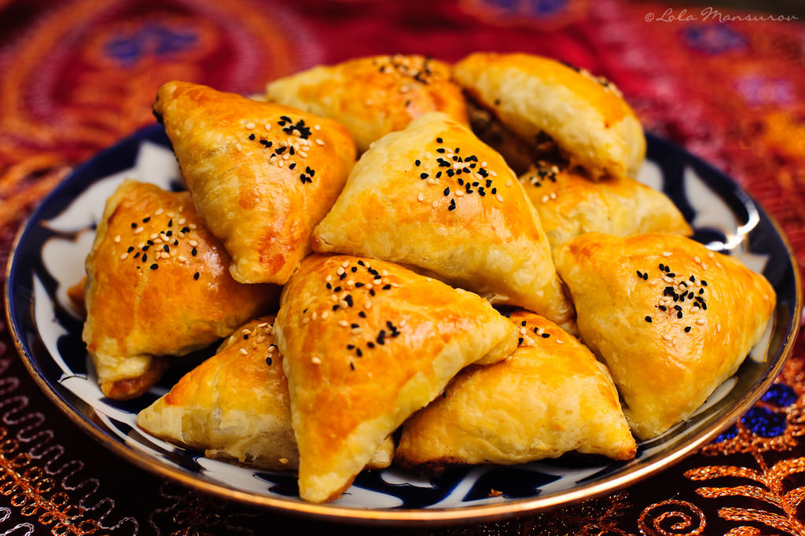

Samosa

Uzbek samosa is a traditional baked pastry filled with meat, onions, and spices.
It is popular in Uzbekistan and is often cooked in a tandoor oven or regular oven.
Samosa has a crispy outer layer and a juicy, flavorful filling inside.
Ingredients
For the Dough
- Flour
- Water
- Salt
- Vegetable oil or butter
For the Filling
- Ground lamb or beef
- Onion
- Salt
- Black pepper
- Cumin
- Vegetable oil or animal fat
Cooking steps
- Prepare the dough by mixing flour, water, salt, and oil.
- Knead the dough until soft and smooth.
- Let the dough rest for from 15 to 20 minutes.
- Cut onions into small pieces.
- Mix meat, onion, salt, pepper, and cumin in a bowl.
- Roll out the dough into thin circles or squares.
- Put the meat filling in the center of each dough piece.
- Fold and shape the samosa into triangles or squares.
- Seal the edges well.
- Place the samosa on a baking tray.
- Bake in the oven until golden brown and crispy.
- Serve hot.
Home